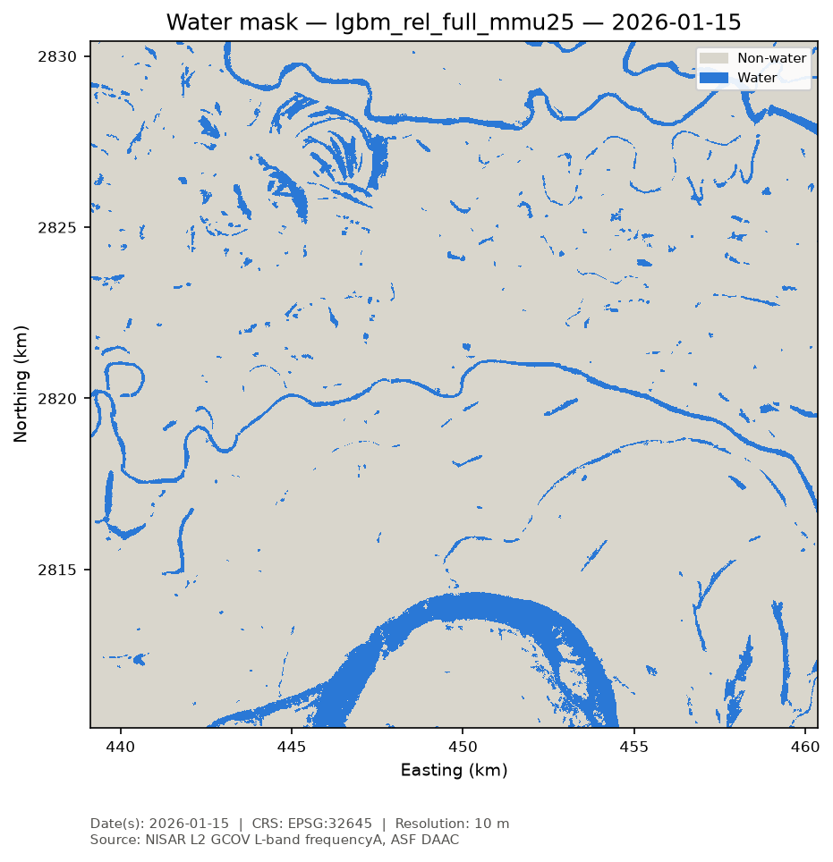
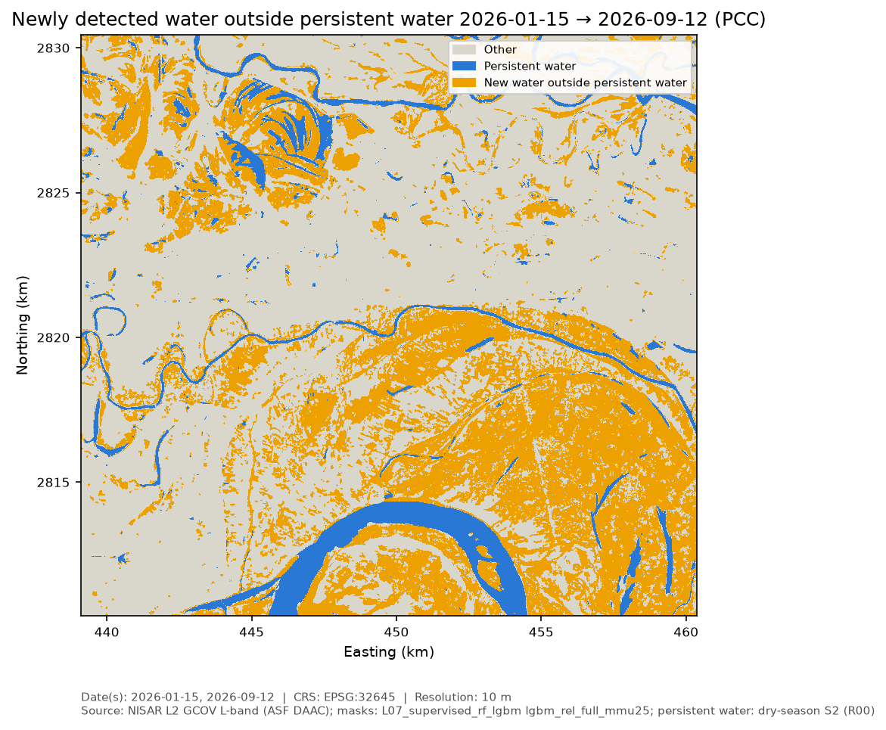
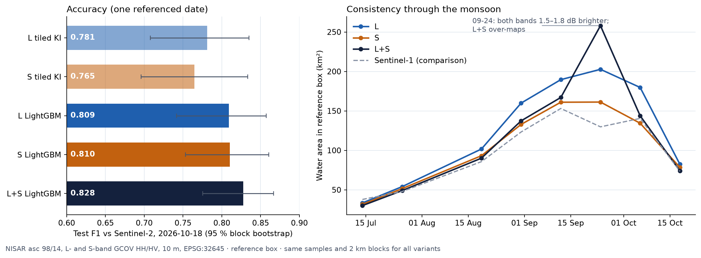
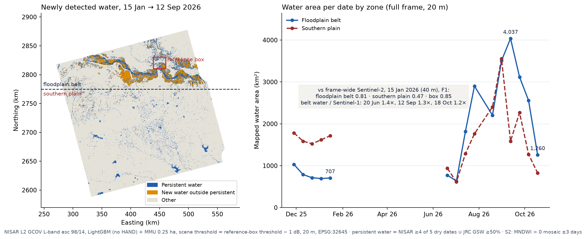

Preprocessing. Invalid pixels are removed with the product's mask layer, radar speckle is reduced with a 7×7 Lee filter, and backscatter is converted to decibels (γ0 dB).
Water classifier. A LightGBM machine-learning model labels each pixel water or not water using only NISAR information: HH backscatter measured relative to each date's own water/land threshold, local texture (averages and variation in small windows), how each pixel behaves across all 15 dates, and terrain height above the nearest drainage (HAND). Expressing backscatter relative to each date's threshold lets the model handle the monsoon, when water looks 3–5 dB brighter at L-band because of wind, rain and shallow water among crops. Small water patches under 0.25 ha are removed.
Training and testing. Inside the 20 km reference box we divided the area into 2 km blocks and used them for training, tuning and a separate 30 % test set that the model never saw. All accuracy numbers below are on these test blocks, with 95 % confidence intervals from resampling the test blocks. We chose this model because it clearly beat simpler threshold methods on the same test blocks (F1 0.832 vs 0.759).
Change detection. The water maps of two dates are compared pixel by pixel into four classes: stable water, newly detected water (gain), water loss and stable non-water. New water is gain outside persistent water.
Full scene. The trained model was applied to the whole NISAR scene (about 64,000 km²) in 20 km tiles. To fit laptop computing, features are computed at 10 m and the map is produced at 20 m. Each date's water/land threshold is taken from the reference box (minus 1 dB) for the whole scene. A strip along the scene edge that has almost no signal on the dry-season images is masked out.
Water maps (reference box, 10 m). Test F1 0.83 (precision 0.84, recall 0.84). The model avoids the main false alarms of simple thresholds, such as dry sand bars and smooth fields, and still follows the monsoon rise (agreement with Sentinel-1 water 0.74–0.82 on monsoon dates).


Change and new water (reference box). Compared with change seen by Sentinel-2, the change maps are 95 % correct overall (gain F1 0.72 on the pair with most real change).
| Reference box, date pair | Stable water (km²) | Gain (km²) | Loss (km²) | New water outside persistent (km²) |
|---|---|---|---|---|
| Dry season 28 Nov 2025 → 15 Jan 2026 | 32.5 | 1.1 | 20.9 | 0.9 |
| Dry season → monsoon peak 15 Jan → 12 Sep 2026 | 32.4 | 130.9 | 1.1 | 129.6 |
| Peak → recession 12 Sep → 18 Oct 2026 | 73.2 | 3.7 | 90.2 | 3.5 |
| Dry season → after the monsoon 15 Jan → 18 Oct 2026 | 31.1 | 45.8 | 2.5 | 44.6 |
Areas = number of pixels × pixel area on the UTM 45N grid. Gain is reported as newly detected water; its pattern (low-lying floodplain and old river loops) fits seasonal flooding, but the maps alone do not prove the cause (rain, river overflow or irrigation).
L-band vs S-band vs combined L+S. On the 8 dates with both bands, each band was processed in exactly the same way and the same model was trained on L, S or both (truth available on 18 Oct 2026).
| Data used | Test F1 | Precision | Recall | Difference vs L-band (95 %) |
|---|---|---|---|---|
| L-band | 0.807 | 0.81 | 0.81 | — |
| S-band | 0.808 | 0.84 | 0.78 | +0.002 [−0.031, +0.040] |
| L + S combined | 0.826 | 0.87 | 0.79 | +0.018 [+0.002, +0.041] |
S-band alone is as accurate as L-band. S-band makes fewer false alarms; L-band finds more water at vegetated edges, as expected from its longer wavelength. Combining the bands improves F1 a little, mainly by removing false alarms, but on 24 Sep 2026 (both bands 1.5–1.8 dB brighter, probably wind or rain) the combined map doubled the water area (258 vs 130 km² in Sentinel-1). Because the gain is small, measured on one date, and S-band covers only the reference box, the final maps use L-band alone.

Polarisation. With all four L-band polarisations (descending full-pol), F1 rises from 0.795 to 0.814. Almost all of the gain comes from the VV channel (and the Pauli surface component, which is mostly VV). Entropy/alpha and model-based decompositions add little, because water returns a very weak, noise-like signal in the HV and VV channels. In S-band compact-pol, total power separates water well (agreement with Sentinel-1 F1 0.85); the other compact-pol measures do not. We also found and corrected an HH–VV phase offset in the delivered full-pol product before computing decompositions.
Full NISAR scene (20 m). Checked against a Sentinel-2 water map of the whole scene for 15 Jan 2026: F1 0.81 in the Ganga floodplain belt (north of 2,775 km northing; precision 0.78, recall 0.83), 0.47 on the plain south of the river (precision 0.33), 0.60 for the whole scene and 0.85 inside the reference box. Floodplain water grows from 694–1,030 km² in the dry season to 4,037 km² at the 12 Sep peak and falls to 1,260 km² by 18 Oct; on monsoon dates it is 1.2–1.4 times the Sentinel-1 estimate.

| Floodplain belt, full scene, date pair | Stable water (km²) | Gain (km²) | Loss (km²) | New water outside persistent (km²) |
|---|---|---|---|---|
| Dry season → monsoon peak 15 Jan → 12 Sep 2026 | 601 | 3,203 | 31 | 3,048 |
| Peak → recession 12 Sep → 18 Oct 2026 | 1,194 | 66 | 2,772 | 57 |
| Dry season → after the monsoon 15 Jan → 18 Oct 2026 | 542 | 665 | 90 | 574 |
Every step is a script driven by a YAML configuration (uv run nisar-water run), writing time-stamped outputs with the exact settings, input granules, code version, accuracy tables, GeoTIFF maps and map images labelled with date, coordinate system, resolution and source. Unit tests cover the data reader, accuracy metrics, change classes and polarimetric features. Software: Python 3.12, h5py, numpy, scipy, xarray, rasterio, scikit-image, scikit-learn, LightGBM, pysheds, pystac-client / Planetary Computer, earthaccess, asf_search, matplotlib; third-party code: nisar-polarimetric-training (D. K. Pandey, Apache-2.0) for GCOV access and decompositions.
References. Chini et al. 2017, IEEE TGRS 55(12) · Cloude & Pottier 1997, IEEE TGRS 35(1) · Freeman & Durden 1998, IEEE TGRS 36(3) · Ke et al. 2017 (LightGBM), NeurIPS · Lee 1980, IEEE TPAMI 2(2) · Martinis et al. 2009, NHESS 9 · Pekel et al. 2016, Nature 540 (JRC GSW) · Xu 2006, IJRS 27(14) (MNDWI). Data: NASA ASF DAAC (NISAR L2 GCOV, L-band); NRSC/ISRO Bhoonidhi (NISAR L2 GCOV, S-band); ESA Copernicus Sentinel-1/-2 and Copernicus DEM GLO-30 via Microsoft Planetary Computer; EC JRC Global Surface Water v1.3.